La ordene få rom
og øyeblikket vare
og øyeblikket vare
Nordlys
GRØNN · FLYTENDE LYS
Fra stille fjorder til lysende buer. Tolv nye motiver møter de seks originale løkkene, med rolig bevegelse og god plass til sangteksten.
Viser 18 av 18 bakgrunner

GRØNN · FLYTENDE LYS
BLÅ · ROLIGE BØLGER
VARM · STILLE GLØD
LILLA · MYKE SLØR
PETROL · LYSFLATER
KOBBER · ÅPNE RINGER
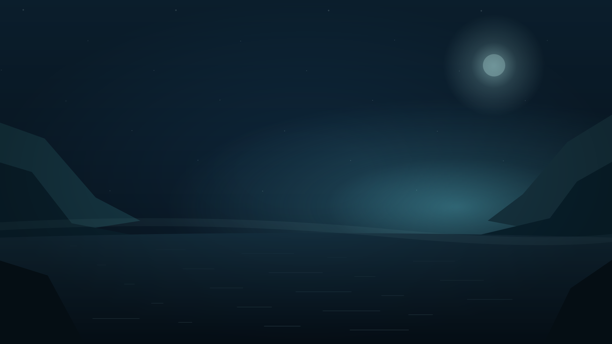
NYTT MOTIVFJORD · BLÅTIME
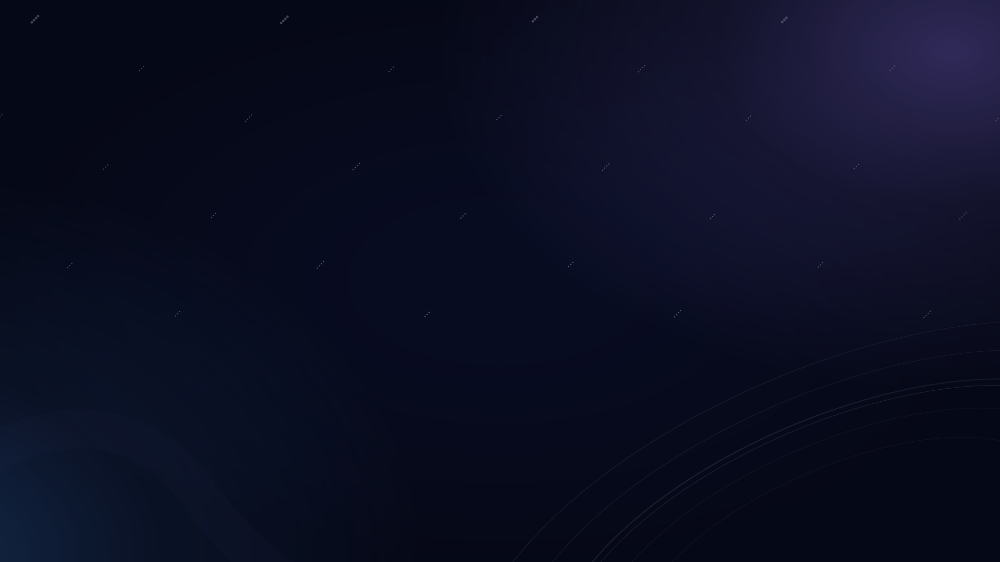
NYTT MOTIVKOSMOS · STJERNESTØV
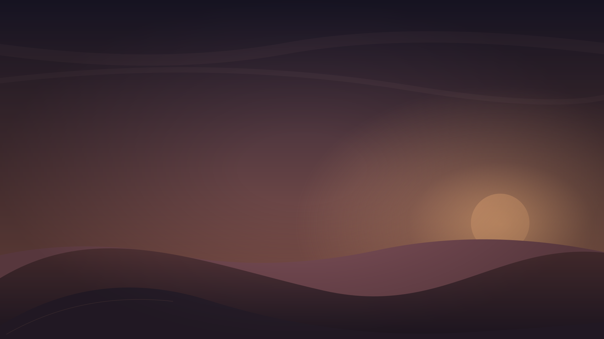
NYTT MOTIVLANDSKAP · VARMT DAGGRY
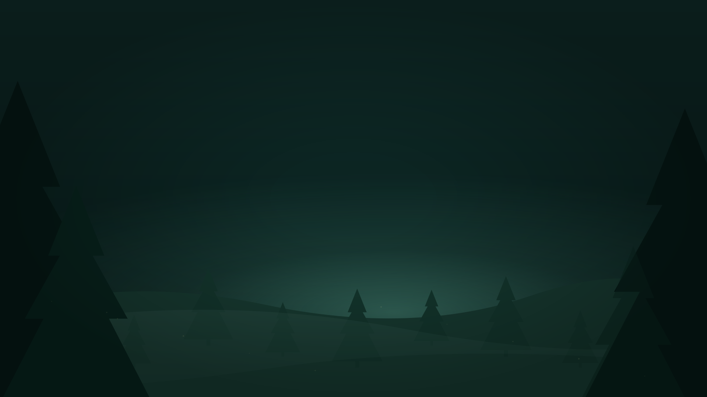
NYTT MOTIVSKOG · DYP GRØNN
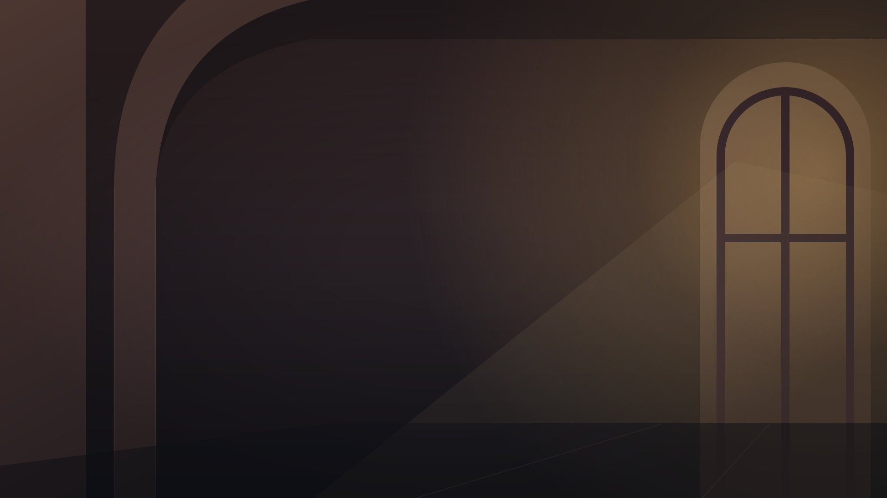
NYTT MOTIVARKITEKTUR · VARMT LYS
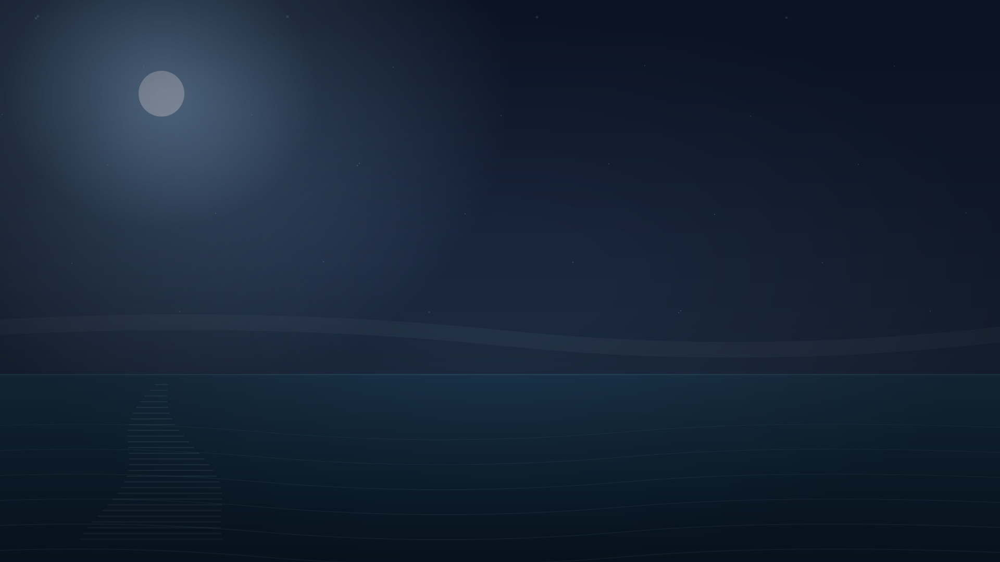
NYTT MOTIVHAV · MÅNEREFLEKS
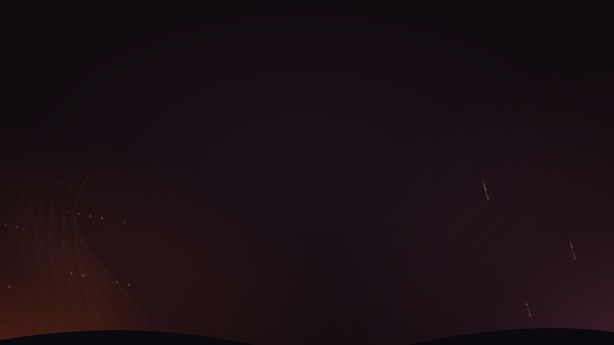
NYTT MOTIVILD · KOBBER OG GLØR
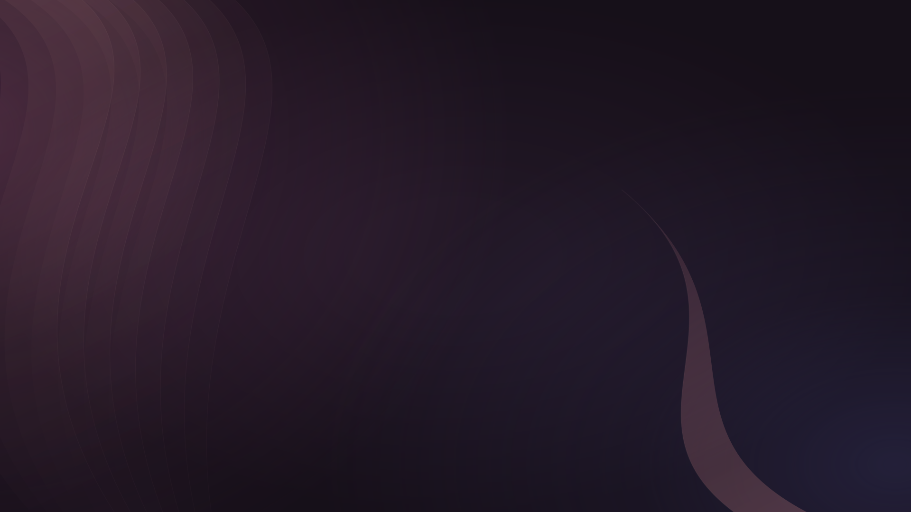
NYTT MOTIVABSTRAKT · FOLDET SILKE
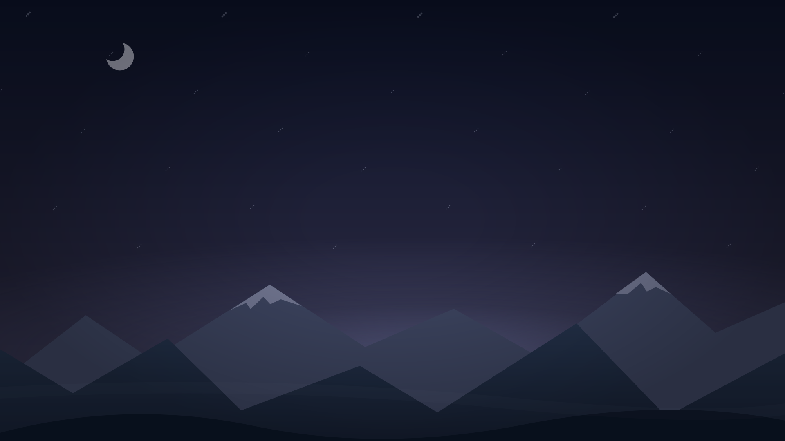
NYTT MOTIVFJELL · STJERNEHIMMEL
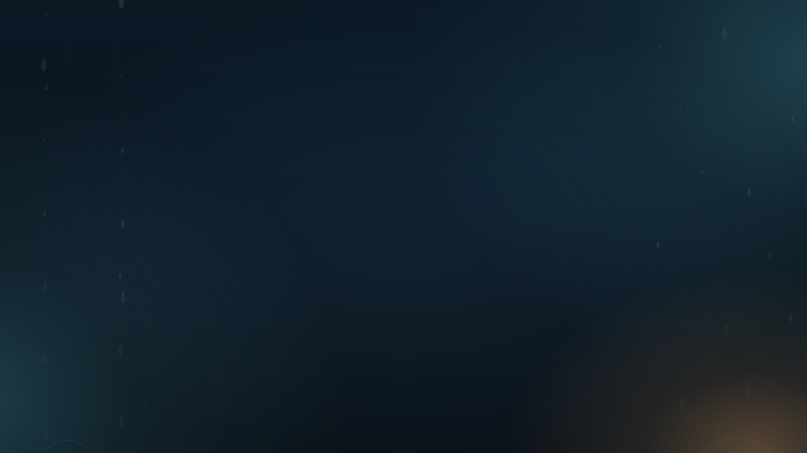
NYTT MOTIVREGN · STILLE DRÅPER
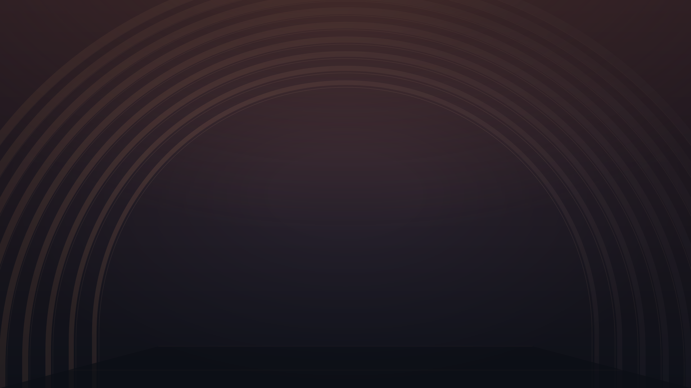
NYTT MOTIVARKITEKTUR · ÅPNE BUER
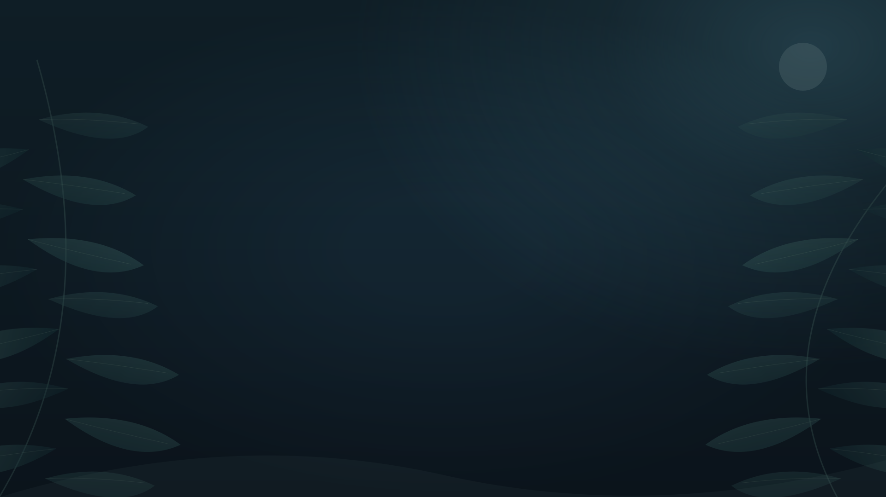
NYTT MOTIVBOTANISK · SVALT MÅNELYS
Ingen treff. Prøv et annet søkeord eller velg «Alle motiver».